4. IO与文件
0 | 概述
此笔记为自己学习GeekTime时，粗略的概括内容，只用作基础入门，未深入学习某一个专题。
除此之外，此笔记尽量少涉及代码，只做理论补充。
每写完一章知识点，尽量配合Linux系统编程的代码写写代码，理解代码实现。
或，快速过完每一点，有个大概，再开始敲代码，再回头边看边写。
1｜外设通信：IO Cache与IO调度
一个计算机系统，无论是 PC，还是手机，除了有 CPU 和 RAM，还有各种外设，如键鼠、硬盘、显卡、以太网卡、声卡等各种 USB 扩展设备。这些设备独立在 CPU 和内存之外，统称为外设。
但是，外设通信的速度、大小、数据类型和传输方式各不相同，所以为了实现系统的整体效率最大化，操作系统实现了 IO Cache 和 IO 调度。今天我们就来研究它们。
IO Cache
顾名思义，Cache 即为缓存，IO 是指令外设传输（IN/OUT）数据的操作。
我们就可以这样理解 IO Cache：
把外设的 IO 操作的数据保存起来，当重新执行 IO 操作时，先从之前保存的地方开始查找，若找到需要的数据，即为命中，这时就不要去操作外设了；若没有命中就去操作外设。
其中的数据，会根据 IO 操作频率进行组织，把操作最频繁的内容放在最容易找到的位置，达到性能最优化。（时间局部性）
free -m
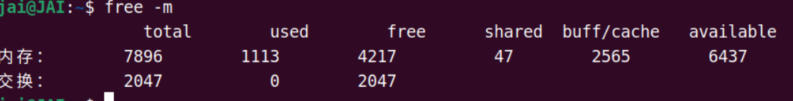
上图中的 buff/cache，就是我们所说的 IO Cache 占用的内存。所谓 IO Cache，不过是操作系统基于某种算法管理的一块==内存==空间，用该内存空间缓存 IO 设备的数据，应用多次读写外设数据会更方便，而不需要反复发起 IO 操作。
寄存器 > 硬件Cache > 内存设备 > I/O设备 /硬盘
早期的 Cache 是位于 CPU 和内存之间的高速缓存，由于硬件实现的 Cache 芯片的速度仅次于 CPU，而内存速度远小于 CPU，Cache 只是为了缓存内存中的数据，加快 CPU 的性能，避免 CPU 等待内存。
而 Buffer 是在内存中由软件实现的，用于缓存 IO 设备的数据，缓解由于 IO 设备过慢带来系统性能下降。
但是现在 Buffer 和 Cache 成了在计算机技术中被用滥的两个名词。
在 Linux 的内存管理中，Buffer 指 Linux 内存的 Buffer Cache，而 Cache 是指 Linux 内存中的 Page Cache，翻译成中文可以叫做缓冲区缓存和页面缓存，用来缓存 IO 设备的读、写数据。
补充一句，这里的 IO 设备，主要指的是块设备文件和文件系统上的普通文件。
块设备，它是指按照固定大小（块大小）进行读写操作的设备，比如硬盘、SSD等存储设备。块设备以块（block）为单位进行数据的读写，而不是按字节或位进行操作。块设备通常用于存储大量数据，如操作系统、文件系统等都会使用块设备来存储数据。
（选看）
Buffer Cache和Page Cache是两种不同的==缓存IO设备==的机制，它们都用于缓存IO设备的数据，但具体的作用和实现方式有所不同。再补充一个TLB。
- Buffer Cache（缓冲区缓存）：
- Buffer Cache是用来缓存块设备的数据的，块设备包括硬盘、SSD等存储设备。
- 当数据需要从块设备读取到内存中时，会先经过Buffer Cache，如果数据在Buffer Cache中存在，则直接从Buffer Cache中读取，避免了频繁访问块设备的开销。
- Buffer Cache是在内存中进行管理的，是一种软件实现的缓存机制，用来提高IO设备的读写性能。
Page Cache（页面缓存）：
Page Cache用于缓存文件系统中的普通文件的数据，包括常见的文本文件、图片等。
当应用程序需要访问文件时，文件的内容会被缓存在Page Cache中，下次再次访问相同文件时，可以直接从Page Cache中读取，而不必每次都去磁盘上读取文件。
Page Cache也是在内存中进行管理的，是一种软件实现的缓存机制，用来提高文件系统的读写性能。
- TLB（Translation Lookaside Buffer）是用于加速虚拟地址到物理地址转换的硬件缓存，位于CPU和内存之间，用来缓存虚拟地址到物理地址的映射关系。TLB主要是为了加速地址转换过程，而不是用来缓存IO设备的数据。
总结：
虽然Buffer Cache和Page Cache都被称为Cache，但它们实际上还是在内存层面操作的，都是软件层面实现的缓存机制来提升性能。而不是直接通过硬件Cache。两种Cache能提升那性能的原因：
减少IO访问次数：通过在内存中缓存IO设备的数据，当需要读取或写入数据时，可以首先尝试从Cache中获取，避免了频繁地访问慢速的IO设备，从而减少了IO访问次数，提高了数据访问的效率。
减少数据传输时间：内存的访问速度远快于IO设备，通过使用Cache在内存中缓存数据，可以减少数据传输的时间，加快数据的读取和写入速度。
提高数据访问的局部性：Cache可以利用局部性原理，将频繁访问的数据缓存到内存中，提高了数据访问的局部性，进一步提高了访问效率。
实际的Cache（比如CPU的Cache）也是通过类似的原理来提高性能的，通过在高速缓存中缓存频繁访问的数据，减少对主存或其他慢速存储设备的访问，从而提高数据访问的速度。
在当前的 Linux 内核中，Buffer Cache 建立 Page Cache 之上，如下图所示：

在现代 Linux 的实现中，远比上图画得要复杂得多，不过我们只需要关注这个层次结构就行了。
Buffer Cache 中有多个小块组成，块大小通常为 512 字节，在 Linux 内核中用一个 struct Bio 结构来描述块，而一个物理内存页中存在多个块，多个 struct Bio 结构形成 Buffer Cache，多个这种页就形成了 Page Cache。
反过来看，块更加接近内存。
块颗粒度更小 ---> 很多个块包成一个页 ---> 很多个页包成内存
因为它们通常比较小，更适合在内存中进行缓存和管理。
而页则是内存管理的基本单位，通常用于管理内存中的数据和交换。
在操作系统理论中，这一套实现机制被抽象为 IO Cache。
各种操作系统上述的实现的叫法不同，在此不必展开了，我们只需要明白它们能在内存中缓存设备数据就行了。
一般情况下，Linux 内核中的 IO 操作，会从上至下经过三大逻辑层，具体如下：
- 文件系统层。因为 Linux 中万物皆为文件，IO 操作首先会经过文件系统，Linux 为了兼容不同的文件系统，对文件、目录等文件系统对象进行了抽象，形成了 VFS 层，也是 IO 操作经历的第一层。
- 块层。Linux 内核把各种设备分成块设备，字符设备、网络设备和硬盘都属于块设备，块层主要负责管理块设备的 IO 队列，对 IO 请求进行合并、排序等操作。
- 设备层。具体设备驱动通过 DMA 与内存交互，完成数据和具体设备之间的交换，此例子中的设备为硬盘。

IO 操作在到达 Linux 的 VFS 层后，会根据相应的 IO 操作标志确定是 DirectIO 还是 BufferedIO。
如果是DirectIO：则不经过 Cache，直接由块层发送到设备层，完成 IO 操作；
如果是BufferIO：则 IO 操作到达 Page Cache 之后就返回了。
在某一时刻，Linux 会启动 pdflush 线程，该线程会扫描 PageCache中的脏页，进而找到对应的 Bio 结构，然后把 Bio 结构发送给块层的 IO 调度器，调度器会对 bio 进行合并、排序，以提高 IO 效率。
之后，调用设备层的相关函数将 Bio 转发到设备驱动程序处理，设备驱动程序函数对 IO 请求队列中每个 Bio 进行分别处理，根据 Bio 中的信息向磁盘控制器发送命令。
处理完成后，调用 Bio 完成函数以通知上层完成了操作。
这便是一个 IO 操作的过程。
IO调度
-
IO调度器
在前面，我们已经明白了 IO Cache 的概念，它本质是把 IO 操作的数据，保存在内存中，使得在读取外设数据时能直接从内存中读取，或者数据缓存到一定量时，由一个特定任务在以后的某个时间批量地写入外设，这不但会提高系统整体吞吐量，还能保护设备以延长寿命。
我们把 IO 操作缓存起来了，这样操作系统就对 IO 操作有了控制权，具体点说就是可以对 IO 操作进行调度。
我先不直接说明 IO 调度是干什么的，先结合例子带你一起分析看看。
-
我们从软件层面来看一个场景：假如一个应用程序往硬盘中写入 1GB 大小的文件，但是这个应用程序很调皮，它每次只写入一个字节。如果没有 IO Cache 和 IO 调度，可以想见，这需要发生多少次 IO 操作才能完成，如果硬件能说话，估计要骂人。
-
再来说说硬件自己结构的问题，这里以机械硬盘为主。千万不要感觉机械硬盘已经淘汰了，其实在很多服务器上仍然大量使用它。硬盘结构如下所示：

一个硬盘中有多个盘片，一个盘片上有多个同心圆组成的多条磁道，每条磁道上有多个扇区，一个扇区 512 字节，磁头来回移动经过多个同心圆形成的柱面定位到一个扇区。很显然，找到一个扇区花费的时间等于磁头移动时间加上盘片旋转的时间。这些运动都是机械运动，是非常缓慢的。
以上两个场景，提醒我们有两个问题需要考虑，一是怎么降低 IO 操作次数，二是如何优化硬盘寻址。
想解决第一个问题，我们可以对 IO 操作进行缓存和合并；
而对于第二个问题，我们可以对 IO 操作进行排序，能让硬盘磁头按照一定的顺序定位扇区
解决这些问题的就是 IO 调度器。
-
-
调度算法
有了 IO 调度器，还得有相应的调度算法。
IO 调度器提供了多种调度算法来适应不同的 IO 请求场景。
有的场景需要的是提高 IO 吞吐量，比如数据库后台的储存引擎；有的场景则是要降低 IO 响应时间，比如游戏应用程序。
三种种调度算法：
-
Noop算法。Noop是最简单的 IO 调度算法，其实可以说它是没有“调度”的 IO 调度，因为Noop会把所有的 IO 请求，几乎按照先来后到的顺序放入先进先出队列之中。之所以说“几乎”，是因为
Noop在先进先出队列的基础上，还做了相邻 IO 操作的合并，而不是完完全全按照先进先出的规则满足 IO 操作。
一个个 Bio 结构进入
Noop IO调度器，产生request结构，这个结构中包含 Bio 链表。Noop IO调度器把扇区相邻的 Bio 合并在一起形成request结构，然后将requset结构挂载到块设备的requset_queue中，块设备通常是你的硬盘。 -
CFQ (Completely Fair Queuing) 算法
由于传统的机械硬盘上，硬盘寻址花去了绝大多数的 IO 操作的时间，所以要优化硬盘寻址所花的时间。
CFQ 调度器的出发点就是对 IO 操作扇区地址进行排序，比如硬盘旋转到 1 号扇区，很快就旋转到 2 号扇区，如果你先访问 2 号扇区再次访问 1 号扇区，则要等到硬盘旋转一周后，才能到达 1 号扇区。
CFQ 调度器对其进行排序后，就能通过尽量少的硬盘旋转次数，来满足尽可能多的 IO 操作。CFQ 调度器算法执行逻辑如下图所示：

我们看到在 CFQ 调度器下，将多个 BIO 结构生成
requset结构时，会按照扇区地址升序挂载到块设备的requset_queue中，这会使机械硬盘的吞吐量大大提高。也有问题：
相比
Noop调度器，不知道你有没有发现一个问题：先来的 IO 操作并不一定能被满足，还可能会出现饿死的情况。比如，先来一个 IO 操作扇区地址是 1000，然后不停地进入扇区地址小于 1000 的 IO 操作，就会出现饿死现象。 -
Deadline算法Deadline 调度器提供了两个红黑树以及两个先进先出队列，两个红黑树分别对读、写的 IO 操作按照其扇区地址排序，同时给每个 IO 操作添加超时时间，并插入到对应的（读、写）先进先出的队列尾部。
这样一来，一个 IO 操作会同时挂在红黑树和先进先出队列中。
当 Deadline 调度器在发送一个 IO 操作时，会综合考虑 IO 操作是否超时、是否饥饿，由此决定到底发送哪个 IO 操作，发送 IO 操作之后会将该 IO 操作同时在红黑树和先进先出队列中删除。

上图中读写队列分开，同时用红黑树对其排序，而且还加入了超时机制。
硬盘驱动会找 Deadline IO 调度器获取 IO request，Deadline IO 调度器根据这些数据结构和算法分配 request，完美地解决了 CFQ IO 调度器的缺陷，由于读写分开且读优先于写，导致该算法非常适合数据库这种随机读写的场景。
IO 调度器算法多种多样，那么要怎么选择呢？其实选择 IO 调度器算法，既要考虑硬件特性，也要考虑应用程序场景。
在传统的机械硬盘上，CFQ、Deadline 算法是不错的选择；对于专属的数据库服务器，Deadline IO 调度器的 IO 吞吐量和 IO 响应时间综合性能都表现非常好。
然而在新兴的固态硬盘，比如 SSD、
NVMe上，最简单的 NOOP IO 调度器反而是最好的 IO 调度器。因为 CFQ 和 Deadline 调度算法，最主要是为缩短机械硬盘寻址时间而优化的；而固态硬盘没有所谓的机械运动寻址部件需要的时间，而且很快能准备好数据，所以 IO 响应时间非常短。
-
总结
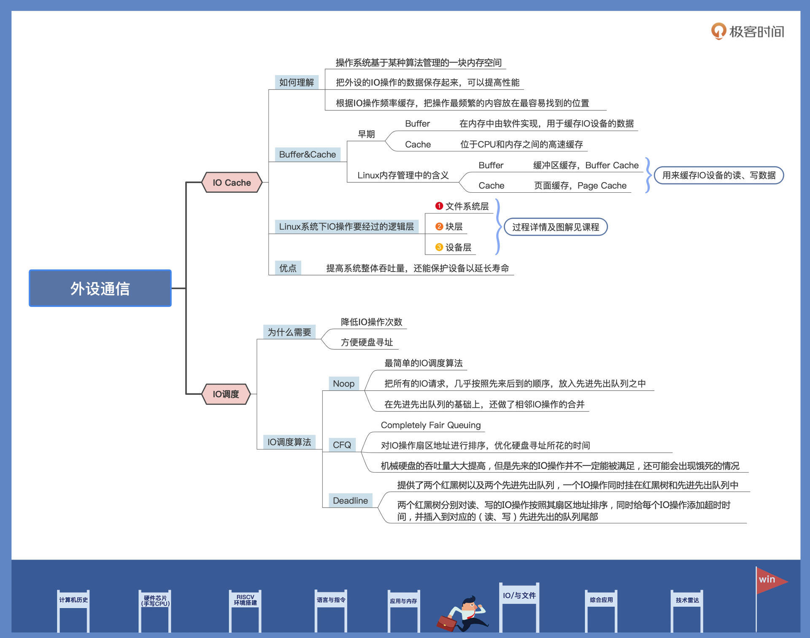
课后思考
操作系统为什么要开发 IO Cache？
文件系统有ntfs和ext4，很多游戏软件只支持ntfs格式，由于磁盘运行效率远低于cpu，好的算法文件系统可以提高磁盘的利用效率（包括跳过磁片中的坏点） io cache是必须的，就好比如把d盘的文件a剪切到c盘中，观察可以得知，假如传输过程中故意关机等，再次开机文件a还在d盘。预计cpu是传输完再删除，这样尽可能的减少磁盘碎片（特别的减少不能被系统识别的碎片冗余存在），io cache也方便操作系统部分情况下延迟应对硬件需求！
提高性能：CPU的运行速度远远快于磁盘等IO设备的速度。通过在内存中缓存磁盘数据，可以减少对慢速IO设备的频繁访问，从而提高系统整体的性能。简单来说就是CPU太快了，但是磁盘设备太慢了。
减少IO访问次数：通过IO Cache，可以避免每次数据访问都需要直接访问磁盘，从而减少了IO访问次数，降低了系统的IO负载，提高了数据访问效率。
优化磁盘利用效率：IO Cache可以帮助优化磁盘的利用效率，包括跳过磁盘中的坏点、减少磁盘碎片等。这些优化可以提高数据读写的效率，减少数据访问的延迟。
提高系统稳定性：通过IO Cache，可以缓存一部分数据在内存中，即使发生意外关机等情况，也可以减少数据的丢失风险，提高系统的稳定性。
综上所述，操作系统开发IO Cache的主要目的是为了提高系统性能、减少IO访问次数、优化磁盘利用效率和提高系统稳定性。通过在内存中缓存IO数据，可以更有效地管理和加速数据访问过程，从而提升系统整体的性能和用户体验。
2｜IO管理：Linux如何管理多个外设？
Linux 是如何管理多个 IO 外设的。先从例子出发，了解一下设备在 Linux 中的与众不同，然后看看设备分类及接口，分析一下应用开发人员应该如何使用它们，最后再实现一个设备加深理解
文件和外设的关系
#define KB_DEVICE_FILE "/dev/input/event3"
int main(int argc, char *argv[])
{
int fd = -1, ret = -1;
struct input_event in;
char *kbstatestr[] = {"弹起", "按下"};
char *kbsyn[] = {"开始", "键盘", "结束"};
//第一步：打开文件(首先要知道目录吧)
fd = open(KB_DEVICE_FILE, O_RDONLY);
if (fd < 0)
{
perror("打开文件失败");
return -1;
}
while (1)
{
//第二步：读取一个event事件包
ret = read(fd, &in, sizeof(struct input_event));
if (ret != sizeof(struct input_event))
{
perror("读取文件失败");
break;
}
//第三步：解析event包
if (in.type == 1)
{
printf("------------------------------------\n");
printf("状态:%s 类型:%s 码:%d 时间:%ld\n", kbstatestr[in.value], kbsyn[in.type], in.code, in.time.tv_usec);
if (in.code == 46)
{
break;
}
}
}
//第四步：关闭文件
close(fd);
return 0;
}
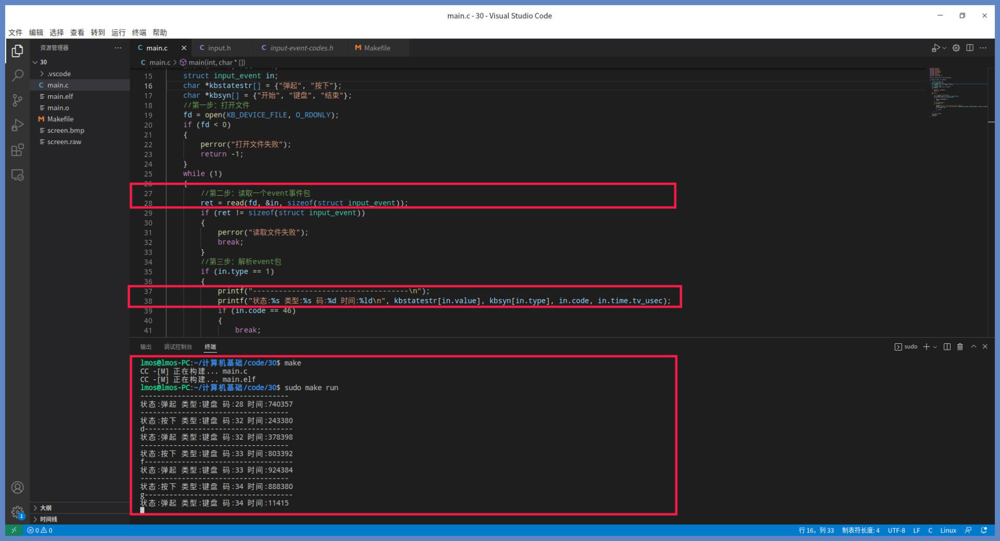
你按下键盘上一个键，终端中它就会输出一行，松开键又会输出一行，输出“按下”或“弹起”的状态、键盘码以及按下弹起所花费的时间，这些数据精确地反映了键盘按键动作。
一个文件就能反映键盘的动作和数据，难道不奇怪吗？
原来 /dev/input/event3 这个文件就代表键盘，这个文件是特殊的设备文件，访问这种文件就是访问 IO 硬件设备。
其实，dev 目录下全部的文件都是设备文件，（熟悉的 Linux 设计哲学——一切皆文件。）
我们可以在 dev 目录下找到系统的所有设备，它们都是以文件的形式存在的。从这种角度看，文件是抽象的，是一种资源对象的标识。
从上面的例子，我们也可以看出，设备的操作完全符合文件的操作方式。
设备输入、输出数据的操作对应文件的读写，设备的启动或者停止则对应文件打开或关闭。(
open(),read(),write(),close())但是设备的操作不只有输入输出数据，还有设置设备功能、配置设备电源等操作。例如设置声卡音量、设置处理器进入待机状态以减少功耗等等。怎么操作的呢？
文件还有一个操作——
ioctl，通过它来给设备发送命令或者设置相关功能。这样一个设备的所有操作就和文件对上了。不过可不要想着用这种方案干坏事哦，比如获取别人输入的敏感信息。In the context of Linux device drivers, the
ioctlsystem call is used to communicate with device drivers and perform device-specific operations that are not covered by the standard read and write operations. This system call provides a way to send control commands to a device driver, allowing user-space applications to interact with hardware peripherals in a flexible and extensible manner.The
ioctlsystem call is commonly used in Linux device drivers to implement custom functionality, retrieve device information, configure device settings, and perform various control operations that are specific to a particular device.Here is an overview of how
ioctlis typically used in a Linux device driver perspective:
Driver Implementation: In the device driver code, you need to define the
ioctlhandler function to handle specific control commands. This function is registered with the device driver and is responsible for interpreting the control commands sent by user-space applications.User-Space Interface: User-space applications can use the
ioctlsystem call to send control commands to the device driver. The application specifies the device file descriptor, the control command, and any required arguments for the command.Handling Control Commands: When the
ioctlsystem call is invoked by a user-space application, the kernel forwards the control command to theioctlhandler function in the device driver. The handler function processes the command, performs the necessary operations, and returns the result to the application.Return Values: The
ioctlhandler function typically returns a status code or result to indicate the success or failure of the operation. User-space applications can check the return value to determine the outcome of the control command.Here is a simplified example to illustrate how
ioctlcan be used in a Linux device driver:#include <linux/fs.h> #include <linux/ioctl.h> #define MY_IOCTL_CMD _IOW('k', 1, int) // Define a custom ioctl command static long my_driver_ioctl(struct file *filp, unsigned int cmd, unsigned long arg) { int value; switch (cmd) { case MY_IOCTL_CMD: // Process the custom ioctl command if (copy_from_user(&value, (int __user *)arg, sizeof(int)) != 0) { return -EFAULT; } // Perform operations based on the value printk(KERN_INFO "Received value from user-space: %d\n", value); // Return a result to user-space return 0; default: return -ENOTTY; // Not a valid ioctl command } }In this example,
my_driver_ioctlis the handler function for the customioctlcommandMY_IOCTL_CMD. When a user-space application sends this command to the device driver, the driver processes the command and performs the specified operations.By using
ioctl, Linux device drivers can provide a versatile interface for user-space applications to interact with hardware peripherals and perform device-specific operations efficiently.
设备分类
想一下，你需要管理你家里的日常用品，你通常会怎么做？你是不是首先会对这些物品进行分类。你可能会按物品的功能用途分类，也可能按物品归属于哪位家庭成员来分类。
对于 Linux 这个计算机大总管也是如此，什么设备有什么功能、是用来做什么的、有多少个这种类型的设备、它们接入系统的方式是什么……这些信息，Linux 都需要了解得非常清楚才可以。
在了解 Linux 如何对设备进行分类之前，我们应该先了解一下常规情况下系统中都有哪些设备。
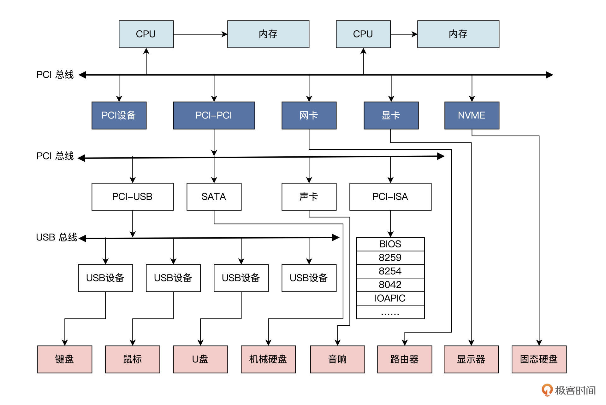
实际情况可能比图中有更多或者更少的总线和设备。
各种设备通过总线相连。这里我们只需要记住，计算机中有很多的设备。
Linux 会把这些设备分成几类，分别是：网络设备、块设备、字符设备、杂项设备以及伪设备。具体情况你可以参考我后面梳理的示意图：

-
网络设备
网络设备在 Linux 上被抽象成一个接口设备，相当于网线插口，任何网络通信都要经过网络接口。
接口就是能与其他主机交换数据的设备，像是电子信号从网口流到另一个网口一样。
Linux 使用一套传输数据包的函数来与网络设备驱动程序通信，它们与字符设备和块设备或者文件的 read() 和 write() 接口不同，所以网络设备在 Linux 中是一个独特的存在。
一般情况下，接口对应于物理网卡，但也可能是纯软件实现的，比如输入
ifconfig命令查看网口时，会输出一个 eth0、一个 lo 等信息：lo 就是网络回环（loopback）接口。Linux 会给每个网络接口分配一个唯一的名字，比如 eth0、eth1 等，方便其它软件访问这些接口，但这个名字在文件系统中并没有对应的文件名。
-
块设备
块设备这种设备类型也是 Linux 下的一个大类。
块设备的特点是能按一块一块的方式传输数据，而且能随机访问设备中的任一地址，具体是通过 /dev 目录下的文件系统节点来访问。
常见的块设备包括硬盘、flash、SSD、U 盘、SD 卡等。
块设备上通常能够安装文件系统，即能被格式化。比如你的机器上有一块硬盘，硬盘上有 4 个分区。那么在 Linux 系统中的表现就是这样的：

这些设备文件可以像访问普通文件一样使用，你只要计算好硬盘地址，就能把数据写入到硬盘扇区中。
比方说，我们可以用
cat /dev/sda1 > sda1.bk命令，对硬盘的分区一进行备份。 -
字符设备
字符设备也是 Linux 下的一个基础类设备，比如键盘、鼠标，串口，声卡等都属于字符设备。
字符设备是顺序访问的，不能随机访问，它只能像是访问字符数据字节流一样被访问，只有在设备响应后才能读到相应信息，这些功能由设备驱动程序保证和维护。
字符设备的驱动程序通常要实现打开、关闭、读取和写入回调函数，供 Linux 使用。
Linux 会将应用程序中的调用，转发给设备驱动程序的回调函数。
字符设备的对应的文件名都在 /dev 目录下，每一个文件对应一个字符设备或者块设备。
我们在 /dev 目录下可以使用 ls -l 命令查看详细信息，第一个字母为“c”的即为字符设备文件，第一个字母为“b”的即为块设备文件。
-
杂项设备和伪设备
杂项设备和伪设备都是基于字符设备实现的，本质上是属于字符设备。
而伪设备则与其它设备不同，它不对应物理硬件，只是通过软件实现了一些功能：
- 比如读取 random 设备能产生一个随机数；
- 再比如把数据写入 null 设备，数据会有去无回，直接被丢弃；
- 还有通过读取
kmsg设备，获取内核输出的信息。
-
补充
有时候我们对于这些还有别的分法，比较混乱，比如，总线设备（SPI、I2C、UART），又有什么平台设备，有些概括会重复，知道即可。
创造一个设备
每种设备都有自己的编程控制方式，所以 Linux 内核才用分而治之的方法，把控制设备代码独立出来，形成内核驱动程序模块。
这些驱动程序模块由驱动开发人员或设备厂商开发，会按照 Linux 内核的规则来编写，并提供相应接口供 Linux 内核调用。
这些模块既能和 Linux 内核静态链接在一起，也能动态加载到 Linux 内核，这样就实现了 Linux 内核和众多的设备驱动的解耦。
有个问题，一个驱动程序既可以是 Linux 内核的一个功能模块，也能代表或者表示一个设备是否存在，那Linux 内核所感知的设备，一定要与物理设备一一对应吗？
我们拿储存设备来举例，其实不管它是机械硬盘，还是 TF 卡，或者是一个设备驱动程序，它都可以向 Linux 内核表明它是储存设备。
但是，它完全有可能申请一块内存空间来储存数据，不必访问真正的储存设备。
所以，Linux 内核所感知的设备，并不需要和物理设备对应，这取决于驱动程序自身的行为。
所以，创造一个设备，等同于编写一个对应驱动程序。
Linux 内核只是和驱动程序交互，而不需要系统中有真实存在的物理设备，只要驱动程序告诉 Linux 内核是什么设备就行。
明白了驱动程序的原理，我们这就来写一个驱动程序。先从 Linux 内核模块框架开始：
#include <linux/module.h>
#include <linux/init.h>
//开始初始化函数
static int __init miscdrv_init(void)
{
printk(KERN_EMERG "INIT misc dev\n");
return 0;
}
//退出函数
static void __exit miscdrv_exit(void)
{
printk(KERN_EMERG "EXIT,misc\n");
}
module_init(miscdrv_init);
module_exit(miscdrv_exit);
//版权信息和作者
MODULE_LICENSE("GPL");
MODULE_AUTHOR("LMOS");
从这个例子我们可以发现，一个内核模块必须要具备两个函数：
- 一个是开始初始化函数，在内核模块加载到 Linux 内核之后。首先就会调用该函数，它的作用通常是创造设备。
- 另一个是退出函数，内核模块退出到 Linux 内核之前，首先就会调用该函数，用于释放系统资源。
有了 Linux 内核模块之后，我们现在还不能调用它，这是因为我们没有创造设备，对应用程序而言是无法使用的。
那么怎么创建一个设备呢？Linux 内核的驱动框架为我们提供了接口和方法，只需要按照接口标准调用它就行了。
这里我们需要创造一个杂项设备，就需要调用 misc_register 函数。
我们只要给这个函数提供一个杂项设备结构体作为参数，就能在 Linux 内核中创造并注册一个杂项设备。如下
#define DEV_NAME "miscdevtest"
// 文件操作方法结构体
static const struct file_operations misc_fops = {
.read = misc_read, //读回调函数
.write = misc_write, //写回调函数
.release = misc_release, //关闭回调函数
.open = misc_open, //打开回调函数
};
// 杂项设备结构体
static struct miscdevice misc_dev = {
.fops = &misc_fops, // 设备文件操作方法
.minor = 255, // 次设备号
.name = DEV_NAME, // 设备名/dev/下的设备节点名
};
static int __init miscdrv_init(void)
{
misc_register(&misc_dev);//创造杂项设备
printk(KERN_EMERG "INIT misc dev\n");
return 0;
}
对照这段代码，我们看到，Linux 用一个 miscdevice (miscellaneous device) 结构体表示一个杂项设备，其实它内部包含了用于表示字符设备的 cdev 结构体，所以杂项设备就是字符设备。
其实 miscdevice 结构体还有很多成员，不过那些我们不用处理，只需要设置以下三个成员即可：
- 设备文件操作方法结构，它是一些函数指针；
- 次设备号，我们设置成最大值，即 255，让系统自动处理；
- 设备名称，就是在 dev 目录下的文件名。
完成上述操作，最后只要在 Linux 内核模块的初始化 miscdrv_init 函数中，调用 misc_register 函数就行了。
这里比较重要的是文件操作方法结构体中的回调函数，它们是完成设备功能的主要函数，
应用程序对设备文件的打开、关闭、读、写等操作，都会被 Linux 内核分发调用到这些函数：
- 在打开函数中，你可以让设备加电工作起来。
- 而在读、写函数中，你可以向设备传输数据。
Linux 内核并不在意你在这些函数做了什么，也不在乎这些操作是不是直接作用于物理设备，Linux 内核只在乎是否有这些函数或者这些函数的执行状态是什么。
//读回调函数
static ssize_t misc_read (struct file *pfile, char __user *buff, size_t size, loff_t *off)
{
printk(KERN_EMERG "line:%d,%s is call\n", __LINE__, __FUNCTION__);
return 0;
}
//写回调函数
static ssize_t misc_write(struct file *pfile, const char __user *buff, size_t size, loff_t *off)
{
printk(KERN_EMERG "line:%d,%s is call\n", __LINE__, __FUNCTION__);
return 0;
}
//打开回调函数
static int misc_open(struct inode *pinode, struct file *pfile)
{
printk(KERN_EMERG "line:%d,%s is call\n", __LINE__, __FUNCTION__);
return 0;
}
//关闭回调函数
static int misc_release(struct inode *pinode, struct file *pfile)
{
printk(KERN_EMERG "line:%d,%s is call\n", __LINE__, __FUNCTION__);
return 0;
}
上述各种操作的回调函数非常简单，都只调用了 printk 函数打印内核 log，这些 log 信息可以在 /dev/kmsg 设备文件中读取。
为了测试这个设备能否正常工作，我们还要写个应用程序对其访问，即对其进行打开、读、写、关闭这些操作，代码如下所示：
#define DEV_NAME "/dev/miscdevtest"
int main(void)
{
char buf[] = {0, 0, 0, 0};
int i = 0;
int fd;
//打开设备文件 O_RDWR, O_RDONLY, O_WRONLY,
fd = open(DEV_NAME, O_RDWR);
if (fd < 0)
{
printf("打开 :%s 失败!\n", DEV_NAME);
}
//写数据到设备
write(fd, buf, 4);
//从设备读取数据
read(fd, buf, 4);
//关闭设备 可以不调用，程序关闭时系统自动调用
close(fd);
return 0;
}
我替你把所有的代码都准备好了（可以从课程配套代码获取），我们在工程目录下 make 一下就可以编译好了。
成功编译后，你会得到一个 miscdrv.ko，这是编译好的 Linux 内核模块文件；还有一个是 App 文件，这个是应用程序。我们在测试之前，先打开一个终端，在其中输入 sudo cat /dev/kmsg，以便观察结果。然后再打开一个终端，在其中输入 sudo insmod miscdrv.ko，把 miscdrv.ko 这个 Linux 内核模块安装加载到系统中。加载好了我们输入 sudo ./app，就可以看结果了，如下图所示：
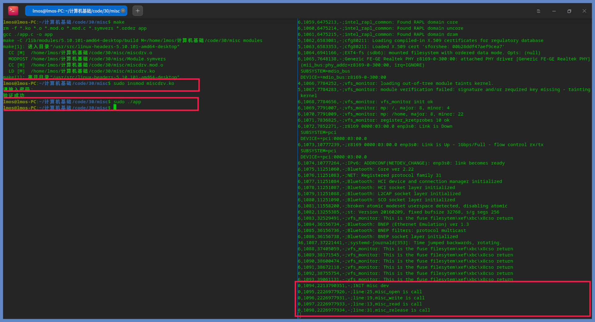
通过截图，我们看到右边终端通过读取 /dev/kmsg 设备输出了正确的结果，这说明我们的设备工作正常。
只不过我们这个设备没有完成任何功能，也没有对应真正的物理设备，但是却真实地反映了设备的工作流程。
到这里我们已经理解了 Linux 管理设备的核心机制：贯彻一切皆文件的思想，Linux 内核会在相应目录下，建立特殊的文件节点，用文件的形式表示一个设备。
而内核操控设备的方式，实质上就是把文件操作转发给对应的设备驱动程序回调函数来处理。
总结
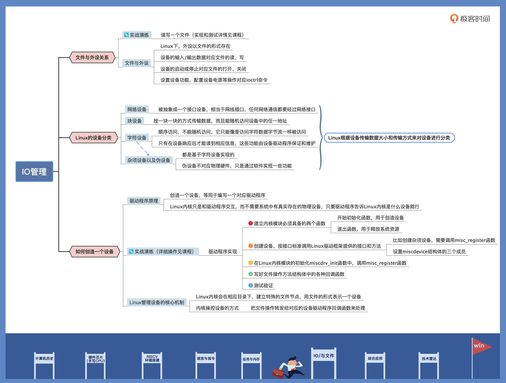
课后思考
What 's the interface for the Linux network communication?
In Linux, network communication is facilitated through the use of sockets. Sockets provide an interface for communication between processes on the same host or between processes on different hosts over a network. The most commonly used types of sockets in Linux are:
Internet Sockets (AF_INET):
- Internet sockets, also known as IPv4 sockets, are used for communication over the Internet using the Internet Protocol (IP). They are identified by the address family
AF_INET. IPv4 sockets use IP addresses to identify hosts on the network.IPv6 Sockets (AF_INET6):
- IPv6 sockets are used for communication using the IPv6 protocol. They are identified by the address family
AF_INET6. IPv6 sockets support the use of IPv6 addresses, which provide a larger address space compared to IPv4.Unix Domain Sockets (AF_UNIX):
- Unix domain sockets are used for communication between processes on the same host. They do not use network communication protocols and are identified by the address family
AF_UNIX. Unix domain sockets use file system paths as addresses for communication.Packet Sockets (AF_PACKET):
- Packet sockets allow direct access to network packets at the link layer. They are identified by the address family
AF_PACKETand are often used for low-level network monitoring and packet manipulation.In Linux, network communication using sockets is typically performed using system calls such as
socket(),bind(),listen(),connect(),send(), andrecv(). These system calls allow processes to create and manage sockets, establish connections, send and receive data over the network.Programs written in C or other programming languages can utilize the socket interface provided by the Linux kernel to implement various network communication protocols such as TCP/IP, UDP, and more. Libraries like
libpcapandlibnetprovide additional functionality for network packet capture and manipulation.
3｜iotop 与 iostat 命令：聊聊命令背后的故事与工作原理
们学习了 IO Cache、IO 调度和 IO 管理的相关知识，但怎样度量和检测一个应用使用 IO 的情况呢？
通过两大监控 IO 操作的神器——
iostat与iotop，在 Linux 系统上，
iostat和iotop这两个 IO 数据工具非常常用。它们都是性能分析领域中不可缺少的工具性软件，也经常被 Linux 网络服务器运维人员，用于分析某些服务器的 IO 类性能与故障。
让你掌握安装、使用它们的方法以及它们的工作原理。
安装和介绍 iostat & iotop
-
安装
iostat可以用来分析 Linux 系统整体 IO 的使用情况；iotop作为iostat增强版和功能升级版，可以分析 Linux 系统每一个进程使用 IO 的情况。
在我们日常使用的 Linux 发行版中，是不包含
iostat与iotop两个 IO 工具软件包的，需要我们自行安装它们才可以使用。不过，我们并不能直接安装
iostat，这样会提示找不到iostat软件包，因为它是包含在sysstat软件包中，所以我们必须先安装sysstat；而iotop却是独立的软件包，直接安装即可。//安装iostat sudo apt-get install sysstat //安装iotop sudo apt-get install iotop -
iostat-
使用
iostat命令，是用来展示系统中的 IO 设备和 CPU 使用情况的。它的最大优势在于能汇报所有块设备活动的统计情况，同时也能汇报出 CPU 使用情况。
但是
iostat命令有一个缺陷，就是它不能对每个应用程序进程进行深入分析，只能分析系统的整体情况。我们先来看iostat如何使用，它的使用形式如下：iostat [选项] [参数]“[]”中的内容可以省略，我们直接在终端中输入
iostat，就会输出相关的全部信息。但是我们如果要观察特定信息，就需要使用相关选项了，常用的部分选项：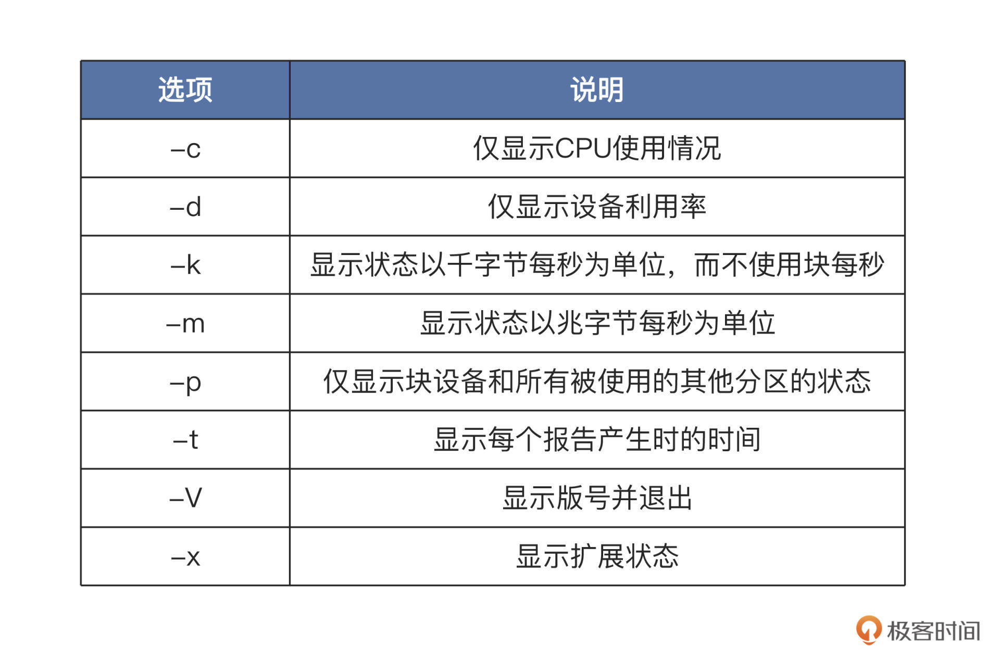
了解了选项，还有个参数我们可能用得上，这个参数可以指定为设备名，比如
/dev/sda。如果不带参数，就会默认显示所有 IO 储存设备的情况。练习：使用
iostat命令看看我们自己机器上的 IO 设备，主要是硬盘的使用情况。这里我们使用iostat -d -m -p -x这个命令，该命令可以显示所有硬盘及其分区的信息：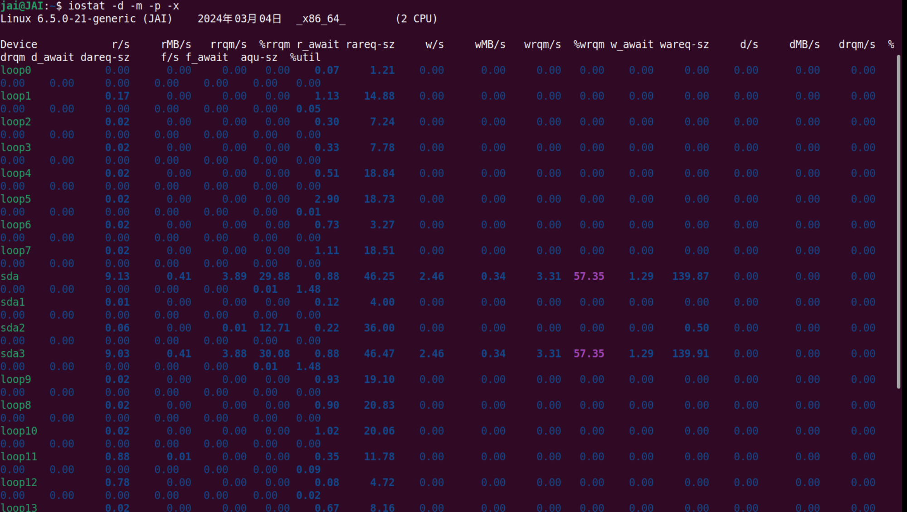
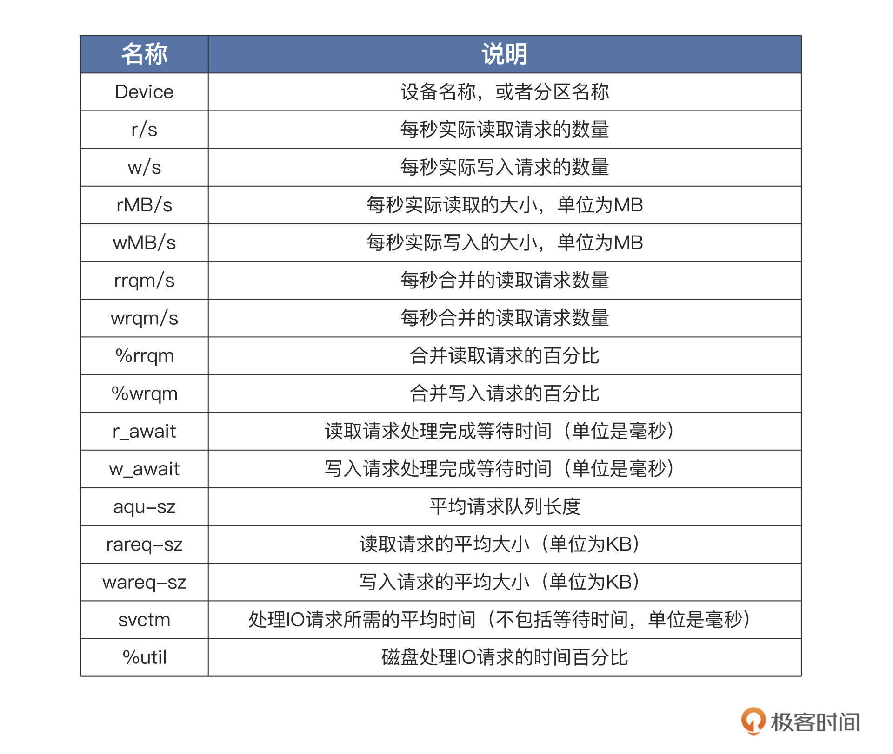
合并读写操作： 多个读写操作合并成一 个
关于读写请求处理等待时间：CPU远快于I/O设备，哪怕是用了PCIE的SSD硬盘，其每秒操作输入输出次数也只有2万次左右，但是CPU的主频往往几GHz，所以，我们在应用开发的时候往往会说“性能瓶颈在 I/O 上”。
很多时候，CPU 指令发出去之后，不得不去“等”我们的 I/O 操作完成，才能进行下一步的操作。
有了这些量化数据，我们就能判断每个硬盘分区的 IO 使用情况，从而分析出哪个设备占用 IO 请求量高或者低、占用时间多少、读取或者写入的数据量有多少。
这样，性能瓶颈出现在哪个设备上，我们心中就有数了。
-
内部原理
iostat命令只是一个应用软件，它的功能就是计算统计数据并且显示。IO 设备操作的数据肯定来源于内核，那iostat怎么获取这些数据就成了关键。我们先手动读取一些文件：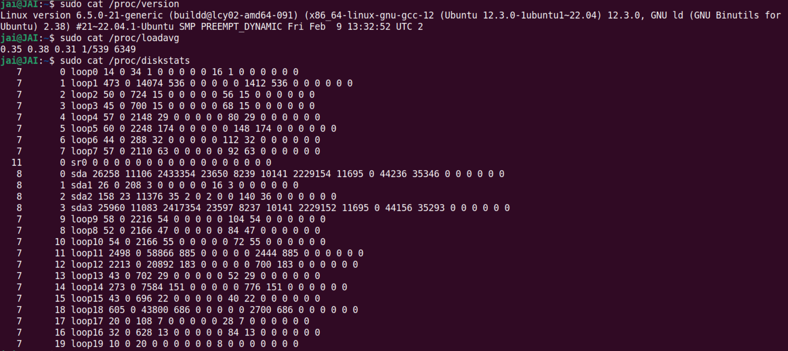
对比
iostat产生的数据，是不是感觉和上面读取的三个文件得到的数据很相似？是的，这些文件就是iostat命令的数据来源，主要的数据来源是/proc/diskstats文件，它记录着块设备 IO 操作的全部统计信息。
下面是 `/proc/diskstats` 文件的数据结构，它的**每一行代表一个块设备或者块设备的分区**，总共 20 列数据，每一列的内容如下表：
Linux 块设备层在处理每个 IO 请求的时候，都会更新这些数据。具体的流程这里不展开了，
iostat只使用了其中部分数据。由于这些数据是线性增加的，
iostat只需要经过多次采集，进行简单的运算就可以了。iostat只是负责的工作其实很简单，就是采集数据并计算显示。我们通过一段时间的 IO 请求数据、写入和读取的数据量、IO 请求等待时间等等这些数据，就可以评估一个设备的 IO 性能了。
-
-
iotop我们前面刚学过的
iostat这个 IO 工具，只能收集量化到每个块设备的读写情况，但如果我们想知道每个进程是如何使用 IO 的就做不到，这就要用到iotop命令了。iotop命令是一个 top 类工具，可以监视磁盘 I/O 使用状况，还可以作为iostat的升级工具使用。iotop命令具有与 Linux 系统自带的 top 相似的 UI，只是 top 更关注进程，而iotop更关注 IO。iotop命令它是使用 Python 语言编写而成，需要用 Python2.5 以上的版本和 Linux 内核 2.6 以上的版本。像
iostat一样，我们一起看看iotop如何使用，它的使用形式如下：sudo iotop [选项]“[]”中的内容可以省略，直接在终端中输入
iotop就会输出相关的全部信息，这一点与iostat相同，但是我们如果要观察特定信息，就需要使用相关选项了。我给你列了一个表梳理选项，如下所示：
-
使用：
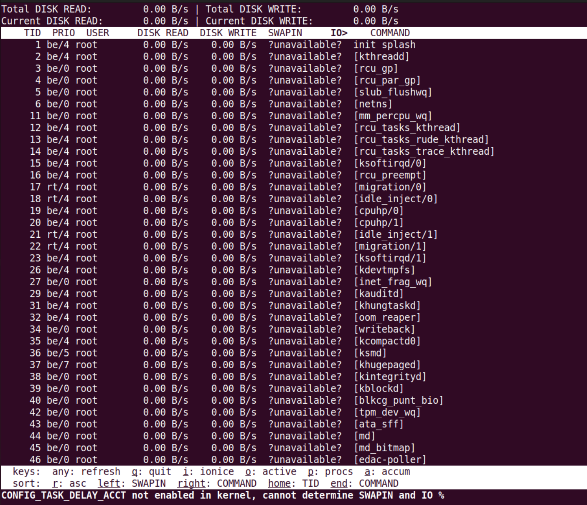
上图中展示了所有进程读写硬盘的情况，头部的数据显示了每一秒钟，所有硬盘和当前硬盘的读写数据量。而下面的每一行代表一个进程，每一行的第一列就是进程 id，也可以在运行过程中输入“p”切换为线程 id，那一行就表示一个线程。后面几列的相关说明：
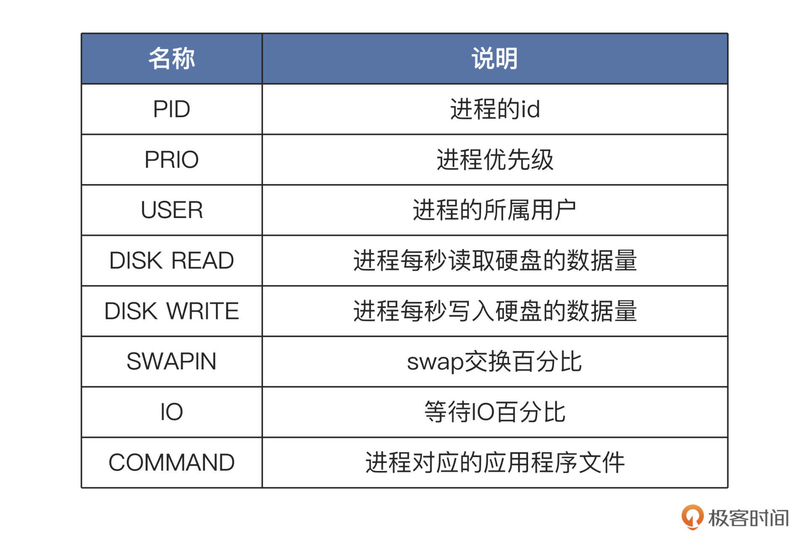
有了这些量化数据，我们就能判断哪些进程是 IO 型进程，哪些进程是计算型进程，每个进程的访问 IO 的数据一目了然。
根据这些数据，我们还能进一步分析出哪个进程使用 IO 的量是高或者低、占用时间多少、进程优先级多少。
IO 性能瓶颈出现在哪个进程上，需要优化哪个进程的 IO 模型，我们心中就有底了。
-
内部原理
与
iostat命令一样，iotop只是一个应用软件，用来统计所有进程的 IO 数据并显示。进程和 IO 操作数据必定来源于 Linux 内核，那
iotop怎么获取这些数据呢？在 Linux 上这些内核数据，都是以文件的形式提供的，即要获取什么数据，就读取什么文件。为了验证这个想法，下面我们试验一下，看看
iotop是不是也是读取了一些 /proc 目录下的文件呢。其实iotop是开源的，我们不妨下载它的代码来研究一下，命令如下：class ProcessList(DumpableObject): def __init__(self, taskstats_connection, options): # {pid: ProcessInfo} self.processes = {} self.taskstats_connection = taskstats_connection self.options = options self.timestamp = time.time() self.vmstat = vmstat.VmStat() # A first time as we are interested in the delta self.update_process_counts() def get_process(self, pid): """Either get the specified PID from self.processes or build a new ProcessInfo if we see this PID for the first time""" process = self.processes.get(pid, None) if not process: process = ProcessInfo(pid) self.processes[pid] = process if process.is_monitored(self.options): return process def list_tgids(self): if self.options.pids: return self.options.pids tgids = os.listdir('/proc') if self.options.processes: return [int(tgid) for tgid in tgids if '0' <= tgid[0] <= '9'] tids = [] for tgid in tgids: if '0' <= tgid[0] <= '9': try: tids.extend(map(int, os.listdir('/proc/' + tgid + '/task'))) except OSError: # The PID went away pass return tids def list_tids(self, tgid): if not self.options.processes: return [tgid] try: tids = map(int, os.listdir('/proc/%d/task' % tgid)) except OSError: return [] if self.options.pids: tids = list(set(self.options.pids).intersection(set(tids))) return tids def update_process_counts(self): new_timestamp = time.time() self.duration = new_timestamp - self.timestamp self.timestamp = new_timestamp for tgid in self.list_tgids(): process = self.get_process(tgid) if not process: continue for tid in self.list_tids(tgid): thread = process.get_thread(tid, self.taskstats_connection) stats = self.taskstats_connection.get_single_task_stats(thread) if stats: thread.update_stats(stats) thread.mark = False return self.vmstat.delta()我们来梳理一下上述代码都做了什么。在
ProcessList类的构造方法__init__中，会调用update_process_counts方法，接着在其中调用list_tgids方法，该方法会打开 /proc 目录获取所有以数字命名的目录名称，那就是 TGID。TGID 就是线程组 ID，对于同一进程中的所有线程，TGID 都是一致的，也就是该进程的进程 ID。
接着循环调用 get_process 方法，在该方法中会构造
ProcessInfo对象以获取每个进程的数据。ProcessInfo类的代码如下所示：class ProcessInfo(DumpableObject): def __init__(self, pid): self.pid = pid self.uid = None self.user = None self.threads = {} # {tid: ThreadInfo} self.stats_delta = Stats.build_all_zero() self.stats_accum = Stats.build_all_zero() self.stats_accum_timestamp = time.time() def get_uid(self): if self.uid: return self.uid try: uid = os.stat('/proc/%d' % self.pid)[stat.ST_UID] except OSError: # The process disappeared uid = None if uid != self.uid: # Maybe the process called setuid() self.user = None self.uid = uid return uid def get_user(self): uid = self.get_uid() if uid is not None and not self.user: try: self.user = safe_utf8_decode(pwd.getpwuid(uid).pw_name) except KeyError: self.user = str(uid) return self.user or '{none}' def get_proc_status_name(self): try: first_line = open('/proc/%d/status' % self.pid).readline() except IOError: return '{no such process}' prefix = 'Name:\t' if first_line.startswith(prefix): name = first_line[6:].strip() else: name = '' if name: name = '[%s]' % name else: name = '{no name}' return name def get_cmdline(self): # A process may exec, so we must always reread its cmdline try: proc_cmdline = open('/proc/%d/cmdline' % self.pid) cmdline = proc_cmdline.read(4096) except IOError: return '{no such process}' #…… return safe_utf8_decode(cmdline) def did_some_io(self, accumulated): if accumulated: return not self.stats_accum.is_all_zero() for t in self.threads.itervalues(): if not t.stats_delta.is_all_zero(): return True return False def get_ioprio(self): priorities = set(t.get_ioprio() for t in self.threads.itervalues()) if len(priorities) == 1: return priorities.pop() return '?dif' def set_ioprio(self, ioprio_class, ioprio_data): for thread in self.threads.itervalues(): thread.set_ioprio(ioprio_class, ioprio_data) def ioprio_sort_key(self): return ioprio.sort_key(self.get_ioprio()) def get_thread(self, tid, taskstats_connection): thread = self.threads.get(tid, None) if not thread: thread = ThreadInfo(tid, taskstats_connection) self.threads[tid] = thread return thread def update_stats(self): stats_delta = Stats.build_all_zero() for tid, thread in self.threads.items(): if thread.mark: del self.threads[tid] else: stats_delta.accumulate(thread.stats_delta, stats_delta) nr_threads = len(self.threads) if not nr_threads: return False stats_delta.blkio_delay_total /= nr_threads stats_delta.swapin_delay_total /= nr_threads self.stats_delta = stats_delta self.stats_accum.accumulate(self.stats_delta, self.stats_accum) return True以上代码，无一例外都是从 /proc 目录下那些数字命名的子目录里获取数据。我们不妨打开 proc 目录观察一下，并且我们还要选择一个特定的、数字命名的子目录进入，如下所示：
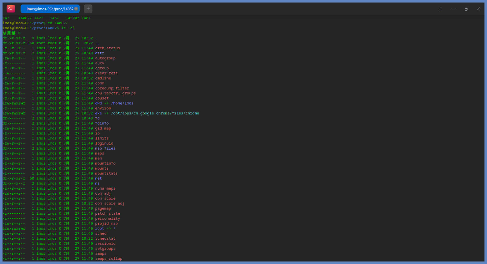
这是谷歌浏览器的进程，里面包含很多子目录，这些子目录中包括了进程的状态、属性、应用程序命令、打开的文件、IO、网络、虚拟内存空间、工作目录、权限、调度信息等大量信息数据。
关于进程的所有信息，我们从这里都可以找到。而
iotop也正是从这里获取数据，然后计算和显示的，这就是iotop的工作原理。
-
总结

课后思考
请说一说 iostat 与 iotop 的不同之处？
iostat 用于块设备活动的统计情况，像硬盘、flash 等，同时也能汇报出 CPU 使用情况，但是只能看系统整体的IO资源开销，无法看某个应用或者进程的IO使用情况。在User权限即可用
而 iotop 则可以看每个进程的 I/O使用情况，并且是在root权限用的。
Your understanding is mostly correct, but let's further clarify the differences between
iostatandiotop:iostat: - Purpose:
iostatis a system monitoring tool that reports CPU utilization and I/O statistics for block devices (such as hard disks, SSDs, etc.). - Overall System View: It provides an overview of the system's I/O performance, including disk throughput, I/O operations per second, and CPU utilization. - User Permission:iostatcan be run with user-level permissions and does not require root access. - Focus: It focuses on the system-level I/O activity and does not provide detailed information about individual processes or applications generating I/O.iotop: - Purpose:
iotopis a utility that specifically monitors and displays I/O usage information for individual processes. - Per-Process View: It shows real-time I/O usage statistics for each running process, allowing you to identify which processes are consuming the most I/O resources. - Root Access:iotoprequires root privileges to run because it accesses sensitive system information about individual processes. - Focus: It is useful for pinpointing I/O-intensive processes that may be causing performance issues or bottlenecks on the system.In summary, while both
iostatandiotopprovide insights into I/O activity,iostatoffers a system-wide view of I/O performance, including CPU utilization, whileiotopfocuses on per-process I/O usage, helping you identify and troubleshoot specific process-level I/O issues.
4｜文件仓库：初识文件与文件系统
Linux 之下一切皆文件
数据是以文件的形式储存下来的，而文件数量一多，就需要文件系统来管理文件，而文件系统正是建立在之前我们学过的 IO 块设备之上，今天我就带你了解一下什么是文件，什么是文件系统。
什么是文件
在日常生活中，我们提到的文件通常是指公文、信件，而计算机中的文件与日常见到的文件载体不同，是以计算机硬盘为载体、存储在计算机上的信息集合。这些信息集合的呈现形式非常多样，可以是文本文档、图片、音乐、视频、应用程序等。文件通常由文件名进行标识和索引。
int main()
{
int fd = -1;
// 打开并建立文件,所有用户可读写
fd = open("empty.file", O_RDWR|O_CREAT, S_IRWXU|S_IRWXO|S_IRWXG);
if(fd < 0)
{
printf("建立文件失败\n");
return -1;
}
// 关闭文件
close(fd);
return 0;
}
上面的代码很简单，我们建立一个名为 empty.file 的文件。
但是注意，我们并没向该文件中写入任何数据，并且你可以在当前目录下看到，该文件的大小为 0。
这说明了文件不一定要有数据，它只是一个标识，
这个标识可以既标识数据、设备，还可以标识接口（如 /proc 目录下的那些文件，其实内核提供给进程的、用来访问特殊数据的接口）。
现在我们再给文件下个定义，就可以说文件从广义上就是一种资源标识或者对象标识。
int main()
{
struct stat filestat;
int fd = -1;
char ch[] = {0, 1, 0xff, 'L', 'M', 'O', 'S'};
// 打开并建立文件,所有用户可读写
fd = open("empty.file", O_RDWR|O_CREAT, S_IRWXU|S_IRWXO|S_IRWXG);
if(fd < 0)
{
printf("建立文件失败\n");
return -1;
}
// 向文件中写入3个字节，0，1，0xff，它们来源于ch数组
write(fd, ch, 3);
// 获取文件信息，比如文件大小
fstat(fd, &filestat);
printf("文件大小:%ld\n", filestat.st_size);
// 关闭文件
close(fd);
return 0;
}
//结果：文件大小为 3
从狭义说，常规文件是一个信息数据集合，单位是字节。
再进一步：
所谓普通文件的结构，本质上是一个可以动态增长的线性字节数组。
无论文件是什么类型或者多大的数据，都会映射到对应的字节，占用一个或者多个字节空间。
我们现在理解了文件是一种标识，也推理出了文件储存数据的结构是什么样子，
但是该怎么描述一个文件呢？
描述一个文件自身也需要很多信息，我们可以把这些信息称为文件元信息。比如上面用来表示文件大小的信息，就是文件的元信息。不过，文件不光有大小的信息，还有其它别的元信息。
int main()
{
struct stat filestat;
int fd = -1;
char ch[] = {0, 1, 0xff, 'L', 'M', 'O', 'S'};
// 打开并建立文件,所有用户可读写
fd = open("empty.file", O_RDWR|O_CREAT, S_IRWXU|S_IRWXO|S_IRWXG);
if(fd < 0)
{
printf("建立文件失败\n");
return -1;
}
// 向文件中写入7个字节，0，1，0xff，L，M，O，S它们来源于ch数组
write(fd, ch, 7);
// 获取文件信息，比如文件大小
fstat(fd, &filestat);
printf("文件大小:%ld\n", filestat.st_size);
printf("文件模式:%d\n", filestat.st_mode);
printf("文件节点号:%ld\n", filestat.st_ino);
printf("文件所在设备号:%ld\n", filestat.st_dev);
printf("文件特殊设备号:%ld\n", filestat.st_rdev);
printf("文件连接数:%ld\n", filestat.st_nlink);
printf("文件所属用户:%d\n", filestat.st_uid);
printf("文件所属用户组:%d\n", filestat.st_gid);
printf("文件最后访问时间:%ld\n", filestat.st_atime);
printf("文件最后修改时间:%ld\n", filestat.st_mtime);
printf("文件状态改娈时间:%ld\n", filestat.st_ctime);
printf("文件对应的块大小:%ld\n", filestat.st_blksize);
printf("文件占用多少块:%ld\n", filestat.st_blocks);
// 关闭文件
close(fd);
return 0;
}
-
dev表示文件所在的设备号， -
rdev则是当文件是设备类型时的设备号。 -
文件模式能表示文件或者目录。
-
文件节点则表示该文件在文件系统中对应的
inode号码。-
inode是文件系统中标识一个文件的元信息，上面代码这些信息大多都来自inode结构，这些信息访问、修改、状态改变的时间是以秒为单位的。上面的数据相同，是因为我们在一瞬间完成了文件的创建和修改。
-
-
用户 id 和用户组 id 则表示该文件是哪个用户建立的，属于哪个用户组。
---> 总结：
上面的各种信息，都是一个普通文件它自身的信息，但是文件，你还需要放东西放数据呀！用什么？索引！指针！
所以思考：对于任何东西，都应该有它自己的属性，所以描述一个东西时，应该为 自身属性 + 其功能。
文件、文件系统都是这样，别的领域应该也是
文件自身数据结构图：

由上图可知，一个普通文件必须有两个部分组成：一个部分为文件元数据，一部分为文件储存的数据。
文件在硬盘上以块为单位储存，这些块的块号在元信息中按照顺序索引起来，就是整个文件的数据，这就是一个普通的数据文件。
普通数据文件的信息都存在储存设备上，这个设备通常是硬盘或硬盘分区（硬盘的一部分）。
文件系统
如果只有一个软件，我们只要确定元数据和文件数据分别放在哪些扇区就可以，无论是查找、读写、删除，怎么处理都很容易。
不幸的是，文件不可能只有一个，而是有成千上万甚至更多，所以这就必须要设计出一套系统方案，来解决多个文件的操作管理。
接下来，我们就聊聊文件管理系统，它是操作系统中一个巨大的功能模块。
文件系统是操作系统在存储设备（常见的是硬盘、U 盘、CD，或者其分区）上构建的储存文件方法和数据结构，也就是在存储设备上组织文件的方法。（也就是一种数据结构）
由于这个功能模块规模很大，操作系统专门起了一个名称，把负责管理和存储文件的功能模块称为文件管理系统，简称文件系统。
文件系统由三部分组成，分别是
- 文件系统的接口
- 对文件操作和管理的功能集
- 文件及其属性。
从操作系统角度来看，文件系统的职责是组织和分配存储设备的空间、文件存储，以及对存入的文件进行保护和检索。
具体点来说，文件系统给用户提供了文件相关操作的一条龙服务，包括为用户建立、存入、读出、修改、转储文件，控制文件的存取读取文件，当用户不再使用时还会删除文件。
一个硬盘中的各个分区上可以使用不同的文件系统，但是在使用之前，我们要对该分区进行格式化。
所谓格式化，就是向该分区写入文件系统相关的信息，以及分配分区中相关扇区的数据结构。
有了这些数据结构和信息，用户应用才能在文件系统里存放文件。
虽然文件系统的核心数据结构，现在我们还没法直观地感受到，但是它在上层为用户或者进程提供了一个逻辑视图，也就是目录结构，一个倒置的树形结构。
树的分支结构上是目录或者文件。从最上层的 /（根）目录开始，就能找到每个文件、每个目录和每个目录下的所有文件。目录对文件进行分层分类，目的是方便用户对众多文件做管理。根据下面路径能找到任意文件：
/home/user1/file1，根“/”目录下“home”目录里的“file1”文件。

想想看，你现在知道了文件系统的逻辑结构，你会怎么设计？
怎么将现实生活中各种错综复杂的数据放入计算机呢？
- 将现实生活中的数据组织成各种逻辑结构
- 将逻辑结构的数据映射到计算机的物理结构（存储结构）中
我们先得设计描述整个文件系统信息的结构，其次要有描述目录的信息结构，然后是描述文件元信息结构，最后别忘了文件数据块结构。
其实，Linux 上众多文件系统都是这么实现的，即使各文件系统在细节上有些变化，但是都具有类似的通用结构，
其中心概念离不开超级块、目录结构、inode 节点、数据块。下面我们分别进行讨论。
-
数据块
文件系统数据结构也是存放在数据块中的。
对于这么多文件系统设计，文件系统首先会把硬盘或者硬盘分区划分为一个个数据块，每个数据块大小是硬盘扇区的整数倍，典型的数据块大小是 1024 字节或者 4096 字节。
这个大小，既可以在格式化硬盘或者硬盘分区创建文件系统的时候决定，也可以由管理员手动指定，还可以在文件系统的创建时根据硬盘分区的大小，动态选择一个较合理的值。
-
超级块
超级块一般会放在硬盘分区的第一个/第二个数据块中。超级块中的数据是 描述文件系统 的控制信息，不是描述文件的（别搞混）
有关该文件系统的大部分信息都保存在超级块中：
- 比如硬盘分区中有多少个数据块，每个数据块的大小、有多少个空闲数据块、文件系统状态、有多少目录或者文件、文件系统名称、UUID、位图信息等。
这些信息可以用来控制和描述一个可正常工作的文件系统。
-
目录结构（文件名称 +
inode号）目录结构很简单，里面就是文件名称和
inode号组成的目录项：一个目录项可以是另一个目录，也可以是一个文件。所有的目录项共同组成了目录文件（特殊的文件）。
根据目录项的
inode节点号，我们就可以找到对应的文件的inode。 -
inode之前讲过，文件：文件元数据(自身数据) + 文件存储的数据。
文件的数据都放在数据块里，我们还必须使用一个数据结构来存储文件的元信息，这种存储文件元信息的数据结构叫做
inode（即索引节点，也经常叫作inode节点）。每一个文件都有对应的
inode，inode包含了文件的元信息。也就是说，除了文件名以外的所有文件信息，都保存在
inode之中，（文件名称在目录条目中），主要有文件的字节数、文件的所属uid、文件的所属组GID、文件的读、写、执行权限，以及文件的创建、修改时间等。-
和数据块的关系：
最重要的是，
inode节点中包括数据块的地址，用于索引文件对应的数据。但
inode节点中只有少量数据块数的地址，如果需要更多，就需要动态分配指向数据块的地址空间。这些动态分配的数据块是间接地址数据块，为了找到数据块，必须先找到间接地址数据块的，然后从里面找到文件的数据块地址。这个间接地址块，可以理解成二重指针，就是在一块地方存储了真实存储数据的地址，然后可以先拿到存数据地址的地址，获取到数据地址，再去数据。而
inode里的直接地址，就没有开始那一步，直接拿地址，取数据。 -
关于
struct stat和inodeIn Linux, the
struct statandinodeare closely related concepts, but they serve different purposes in the file system.-
The
struct statis a data structure used by system calls to retrieve information about a file, such as its size, permissions, timestamps, and other attributes. When a program calls functions likestat()orfstat(), the operating system populates astruct statobject with metadata about the specified file. -
On the other hand, an
inode(index node) is a data structure used by the file system to store information about a file on disk. Each file in a Unix-like file system is represented by aninode, which contains metadata such as file size, ownership, permissions, timestamps, and pointers to the actual data blocks on disk.
The relationship between
struct statandinodecan be understood as follows: - When a program requests file information usingstat()orfstat(), the operating system reads theinodeof the file from disk and populates astruct statobject with the relevant information stored in theinode. - Thestruct statobject in memory provides a convenient way for programs to access and manipulate file attributes without directly interacting with the low-levelinodedata structures.In summary, while both
struct statandinodestore file information, they serve different roles:struct statis used by programs to access file metadata in memory, whileinodesare used by the file system to store detailed file information on disk. (software and hardware) / (Bottom and upper floors)(Alternative: if you have learnt the C++)analogous classes and objects(instances):
In C++, a class serves as a blueprint or template for creating objects. It defines the structure and behavior of objects of that class.
When you create an object of a class, you are instantiating that class to create a specific instance with its own set of data.
Similarly, in Linux: - The
struct statserves as a template or data structure definition for storing file information in memory. - When a program requests file information using functions likestat()orfstat(), - The operating system first read s theinodeof the specific file from disk to attain some detailed metadata about the file, such as its size, ownership, and pointers to the data blocks on disk. - And uses thestruct stattemplate to create an instance (object) in memory that holds the metadata of the specified file.In this analogy: - The
struct statcan be seen as the class definition that specifies the fields and structure of the file metadata. - Each time file information is retrieved and stored in memory, it creates an instance of thestruct statobject with the specific attributes of that file.Just like how you can create multiple objects of a class in C++, the operating system can create multiple instances of the
struct statobject to hold information about different files. Each instance (object) ofstruct statrepresents the metadata of a specific file, similar to how objects represent specific instances of a class in C++. -
-
有了上述四大核心结构，就可以表示一个文件系统了。
其实 Linux 对 超级块结构、目录结构，inode 结构 、数据块，还做了进一步抽象，把这些结构加入了操作函数集合,
形成了 VFS，即虚拟文件系统。
只要软件模块能提供上述四大核心结构的操作函数集合，生成超级块结构，就可以形成一个文件系统实例，安装到 VFS 中。
有了 VFS 层就可以向上为应用程序提供统一的接口，向下兼容不同的文件系统，让 Linux 能够同时安装不同的文件系统。
架构如下：

你有没有发现？在计算机科学领域的很多问题，都可以通过增加一个中间的抽象层来解决。
上图中 Linux 的 VFS 层就是应用和许多文件系统之间的抽象层。VFS ，向下规范了一个文件系统要接入 VFS 必需要实现的机制。
为此，VFS 提供了一系列数据结构，如 files、superblock、dentry、inode 结构，还规定了具体文件系统应该实现生成这些数据结构的回调函数。
这样，一个文件系统模块就可以被安装到 VFS 中了。操作具体文件时，VFS 会根据需要调用具体文件系统的函数。
从此文件系统的细节就被 VFS 屏蔽了，应用程序只需要调用标准的接口就行了。
也正因如此，Linux 可以支持 EXT、XFS、BTRFS、FAT、NTFS 等多达十几种不同的文件系统，但不管在什么储存设备上使用什么文件系统，也不管访问什么文件，都可以统一地使用一套类似 open()、read()、write()、close() 的接口。
如要深入学习，看《操作系统实战》45讲的第三十五节课35 | 瞧一瞧Linux：虚拟文件系统如何管理文件？-操作系统实战45讲-极客时间 (geekbang.org)
总结

课后思考
思考题一般的 Linux 上的文件系统都有哪些内部结构？
超级块、目录结构、数据块、inode结点
5｜Linux文件系统（一）：Linux如何存放文件？
接下来的两节课，我们继续深入学习 Linux 上的一个具体的文件系统——Ext3，搞清楚了文件究竟是如何存放的。
我们先建立一个虚拟硬盘，并在上面建立一个文件系统，来对照代码实例，深入认识 Ext3
建立虚拟硬盘
我们选择虚拟硬盘，在这个虚拟硬盘上操作，这样怎么折腾都不会有事。
其实我们是用 Linux 下的一个文件来模拟硬盘的，写入硬盘的数据只是写入了这个文件中。
所以建立虚拟硬盘，就相当于生成一个对应的文件。比如，我们要建立一个 100MB 的硬盘，就意味着我们要生成 100MB 的大文件。
下面我们用 Linux 下的 dd 命令（用指定大小的块拷贝一个文件，并在拷贝的同时进行指定的转换）生成 100MB 的纯二进制的文件（就是向 1～100M 字节的文件里面填充为 0 ），代码如下所示：
dd bs=512 if=/dev/zero of=hd.img count=204800
;bs:表示块大小，这里是512字节
;if：表示输入文件，/dev/zero就是Linux下专门返回0数据的设备文件，读取它就返回0
;of：表示输出文件，即我们的硬盘文件
;count：表示输出多少块
下面我们就要在虚拟硬盘上建立文件系统了，所谓建立文件系统就是对虚拟硬盘放进行格式化。
可是，问题来了——虚拟硬盘毕竟是个文件，如何让 Linux 在一个文件上建立文件系统呢？这个问题我们要分成两步来解决。
-
第一步，把虚拟硬盘文件变成 Linux 下的回环设备，让 Linux 以为这是个设备。下面我们用
losetup命令，将hd.img这个文件变成 Linux 的回环设备，代码如下：sudo losetup /dev/loop0 hd.img -
第二步，由于回环设备就是 Linux 下的块设备，用户可以将其看作是硬盘、光驱或软驱等设备，并且可以用 mount 命令把该回环设备挂载到特定目录下。这样我们就可以用 Linux 下的
mkfs.ext3命令，把这个 /dev/loop0 回环块设备格式化，进而格式化hd.img文件，在里面建立 Ext3 文件系统。sudo mkfs.ext3 -q /dev/loop0需要注意的是，loop0 可能已经被占用了，我们可以使用 loop1、loop2 等，你需要根据自己电脑的情况处理。
我们可以用 mount 命令将
hd.img挂载到特定的目录下，如果命令执行成功，就能验证我们虚拟硬盘上的文件系统成功建立。命令如下所示：sudo mount -o loop ./hd.img ./hdisk/ ;挂载硬盘文件这行代码的作用是，将
hd.img这个文件使用 loop 模式挂载在./hdisk/目录之下，通过这个hdisk 目录，就能访问到hd.img虚拟硬盘了。并且，我们还可以用常用的mkdir、touch命令在这个虚拟硬盘中建立目录和文件。
Ext3文件系统结构
我们建好了硬盘，对其进行了格式化，也在上面建立了 Ext3 文件系统。
下面我们就来研究一下 Ext3 文件系统的结构。Ext3 文件系统的全称是 Third extended file system，已经有 20 多年的历史了，是一种古老而成熟的文件系统。
Ext3 在 Ext2 基础上加入了日志机制，也算是对 Ext2 文件系统的扩展，并且也能兼容 Ext2。Ext3 是在发布 Linux2.4.x 版本时加入的，支持保存上 TB 的文件，保存的文件数量由硬盘容量决定，还支持高达 255 字节的文件名。
Ext3 的内部结构是怎样的呢？
Ext3 将一个硬盘分区分为大小相同的储存块，每个储存块可以是 2 个扇区、4 个扇区、8 个扇区，分别对应大小为 1KB、2KB、4KB。所有的储存块又被划分为若干个块组，每个块组中的储存块数量相同。
硬盘(分区) --> 块组 --> 存储块 --> 块 --> 扇区
每个块组前面若干个储存块中，依次放着：超级块、块组描述表、块位图、inode 节点位图、inode 节点表、数据块区。
需要注意的是，超级块和块组描述表是全局性的，在每个块组中它们的数据是相同的。我再帮你画一个逻辑结构图，你就容易理解了，如下所示：
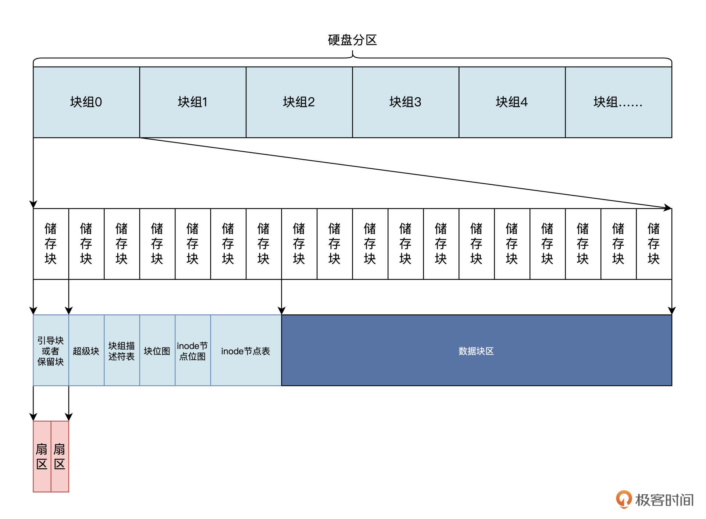
上图中，第 1 个储存块是用于安装引导程序，或者也可以保留不使用的。
超级块占用一个储存块，在第 2 个储存块中，即储存块 1，储存块的块号是针对整个分区编码的，从 0 开始。
其中的块组描述符表、块位图、inode 节点位图、inode 节点表的占用大小，是根据块组多少以及块组的大小动态计算的。
Ext3 文件系统的超级块
我们首先要探讨的是 Ext3 文件系统的超级块，它描述了 Ext3 的整体信息，例如有多少个 inode 节点、多少个储存块、储存块大小、第一个数据块号是多少，每个块组多少个储存块等。
Ext3 文件系统的超级块存放在该文件系统所在分区的 2 号扇区，占用两个扇区。当储存块的大小不同时，超级块所在块号是不同的：
- 当储存块大小为 1KB 时，0 号块是引导程序或者保留储存块，超级块起始于 1 号块储存；
- 当块大小为 2KB 时，超级块起始于 0 号储存块，其位于 0 号储存块的后 1KB，前 1KB 是引导程序或者保留；
- 当储存块大小为 4KB 时，超级块也起始于 0 号储存块，其位于 0 号块的 1KB 处。
总之\
klkll超级块位于相对于分区的 2 号~3 号扇区，这一点是固定的。下面我们看一看用 C 语言定义的超级块，代码如下所示：
struct ext3_super_block {
__le32 s_inodes_count; //inode节点总数
__le32 s_blocks_count; // 储存块总数
__le32 s_r_blocks_count; // 保留的储存块数
__le32 s_free_blocks_count;// 空闲的储存块数
__le32 s_free_inodes_count;// 空闲的inode节点数
__le32 s_first_data_block; // 第一个数据储存块号
__le32 s_log_block_size; // 储存块大小
__le32 s_log_frag_size; // 碎片大小
__le32 s_blocks_per_group; // 每块组包含的储存块数
__le32 s_frags_per_group; // 每块组包含的碎片
__le32 s_inodes_per_group; // 每块组包含的inode节点数
__le32 s_mtime; // 最后挂载时间
__le32 s_wtime; // 最后写入时间
__le16 s_mnt_count; // 挂载次数
__le16 s_max_mnt_count; // 最大挂载次数
__le16 s_magic; // 魔数
__le16 s_state; // 文件系统状态
__le16 s_errors; // 错误处理方式
__le16 s_minor_rev_level; // 次版本号
__le32 s_lastcheck; // 最后检查时间
__le32 s_checkinterval; // 强迫一致性检查的最大间隔时间
__le32 s_creator_os; // 建立文件系统的操作系统
__le32 s_rev_level; // 主版本号
__le16 s_def_resuid; // 默认用户保留储存块
__le16 s_def_resgid; // 默认用户组保留储存块
__le32 s_first_ino; // 第一个非保留inode节点号
__le16 s_inode_size; // inode节点大小
__le16 s_block_group_nr; // 当前超级块所在块组
__le32 s_feature_compat; // 兼容功能集
__le32 s_feature_incompat; // 非兼容功能集
__le32 s_feature_ro_compat;// 只读兼容功能集
__u8 s_uuid[16]; // 卷的UUID（全局ID）
char s_volume_name[16]; // 卷名
char s_last_mounted[64]; // 文件系统最后挂载路径
__le32 s_algorithm_usage_bitmap; // 位图算法
//省略了日志相关的字段
};
以上的代码中我省略了日志和预分配的相关字段，而 __ le16、__le32，在 x86 上就是 u16、u32 类型的数据。le 表示以小端字节序储存数据，定义成这样，是为了大小端不同的 CPU 可以使用相同文件系统，或者已经存在的文件系统的前提下，方便进行数据转换。
在上述代码中，通过使用
__le16和__le32这样的数据类型，文件系统的设计者可以确保在不同大小端（即大端序和小端序）的CPU上都可以正确解释数据。这种跨平台兼容性是通过以下方式实现的：
- 小端字节序（Little Endian）和大端字节序（Big Endian）：
- 小端字节序：数据的低位字节存储在内存的低地址处，高位字节存储在高地址处。
大端字节序：数据的高位字节存储在内存的低地址处，低位字节存储在高地址处。
__le16和__le32数据类型：__le16表示一个16位整数，以小端字节序存储。
__le32表示一个32位整数，以小端字节序存储。数据转换：
- 当在一个小端序的CPU上读取一个以小端序存储的数据时，数据的字节顺序是正确的，无需转换。
当在一个大端序的CPU上读取一个以小端序存储的数据时，需要进行字节顺序转换，将数据的字节顺序反转，以正确解释数据。
跨平台兼容性：
- 通过在文件系统中使用
__le16和__le32这样的数据类型，文件系统可以在不同大小端序的CPU上进行正确解释，因为无论是大端序还是小端序的CPU，都可以根据数据类型进行正确的字节顺序转换。因此，通过设计文件系统时考虑到大小端序的问题，并使用特定的数据类型来确保数据在不同大小端CPU上的正确解释，可以实现文件系统的跨平台兼容性。这种设计可以确保文件系统可以在不同架构的计算机上使用，并且数据能够被正确地读取和处理。
在计算机中，数据的存储方式（大小端序）是由CPU的设计决定的，而CPU是通过内部的寄存器和数据总线来处理数据的。下面是关于CPU以大端序或小端序存储数据的一些基本原理：
- 大端序（Big Endian）：
- 在大端序中，数据的高位字节存储在内存的低地址处，低位字节存储在高地址处。
例如，对于一个16位整数
0x1234，在大端序中，其存储形式为0x12 0x34，高字节在低地址，低字节在高地址。小端序（Little Endian）：
- 在小端序中，数据的低位字节存储在内存的低地址处，高位字节存储在高地址处。
例如，对于同样的16位整数
0x1234，在小端序中，其存储形式为0x34 0x12，低字节在低地址，高字节在高地址。内部工作原理：
- CPU内部的寄存器和数据总线会根据CPU的设计来处理数据的存储和访问。
- 当CPU读取或写入数据时，会将数据从内存加载到寄存器中进行处理，或者将寄存器中的数据写回内存。
CPU会根据其设计的大小端方式，将数据从内存加载到寄存器或写回内存时，按照对应的字节顺序进行操作。
设置大小端序：
- 在一些CPU架构中，可以通过设置特定的寄存器或标志位来指定CPU使用的大小端序。
- 例如，某些ARM处理器可以通过配置控制寄存器来选择使用大端序或小端序。
总的来说，CPU以大端序还是小端序存储数据是由CPU的设计决定的，这种设计会影响数据在内存中的存储方式和访问顺序。不同的CPU架构可能采用不同的大小端方式，而这种设计会对数据的存储和处理产生影响。因此，在设计文件系统或通信协议时，需要考虑不同CPU的大小端方式，以确保数据的正确传输和解释。
Ext3 文件系统的块组描述符表
Ext3 文件系统的块组描述符，里面存放着用来描述块组中的位图块起始块号、inode 节点表起始块号、空闲 inode 节点数、空闲储存块数等信息，文件系统中每个块组都有这样的一个块组描述符与之对应。
所有的块组描述符集中存放，就形成了块组描述符表。
块组描述符表的起始块号位于超级块所在块号的下一个块，在整个文件系统中，存有很多块组描述符表的备份，存在的方式与超级块相同。下面我们看一看用 C 语言定义的单个块组描述符结构，如下所示：
struct ext3_group_desc
{
__le32 bg_block_bitmap; // 该块组位图块起始块号
__le32 bg_inode_bitmap; // 该块组inode节点位图块起始块号
__le32 bg_inode_table; // 该块组inode节点表起始块号
__le16 bg_free_blocks_count; // 该块组的空闲块
__le16 bg_free_inodes_count; // 该块组的空闲inode节点数
__le16 bg_used_dirs_count; // 该块组的目录计数
__u16 bg_pad; // 填充
__le32 bg_reserved[3]; // 保留未用
};
对照上述代码，我们可以看到，多个 ext3_group_desc 结构就形成了块组描述符表，而 __le16 __le32 类型和超级块中的相同。如果想知道文件系统中有多少个块组描述符，可以通过超级块中总块数和每个块组的块数来进行计算。
Ext3 文件系统的位图块
接下来要说的是 Ext3 文件系统的位图块，它非常简单，每个块组中有两种位图块：
- 一种用来描述块组内每个储存块的分配状态。
- 另一种用于描述
inode节点的分配状态。
位图块中没有什么结构，就是位图数据，即块中的每个字节都有八个位。
每个位表示一个相应对象的分配状态：
- 该位为 0 时，表示相应对象为空闲可用状态；
- 为 1 时则表示相应对象是占用状态。
例如位图块中第一个字节，表示块组 0~7 号储存块的分配状态；第二个字节，表示块组 8~15 号储存块的分配状态 ……依次类推。位图块的块号可以从块组描述符中得到。
Ext3 文件系统的 inode 节点
上节课我们提过，inode 节点用来存放跟文件相关的所有信息，但是文件名称却不在 inode 节点之中，文件名称保存在文件目录项中。
inode 节点中包含了文件模式、文件链接数、文件大小、文件占用扇区数、文件的访问和修改的时间信息、文件的用户 ID、文件的用户组 ID、文件数据内容的储存块号等，这些重要信息也被称为文件的元数据。那么，用 C 语言如何定义单个 inode 节点结构呢？代码如下所示：
struct ext3_inode {
__le16 i_mode; // 文件模式
__le16 i_uid; // 建立文件的用户
__le32 i_size; // 文件大小
__le32 i_atime; // 文件访问时间
__le32 i_ctime; // 文件建立时间
__le32 i_mtime; // 文件修改时间
__le32 i_dtime; // 文件删除时间
__le16 i_gid; // 建立文件的用户组
__le16 i_links_count; // 文件的链接数
__le32 i_blocks; // 文件占用的储存块 */
__le32 i_flags; // 文件标志
union {
struct {
__u32 l_i_reserved1;
} linux1;
struct {
__u32 h_i_translator;
} hurd1;
struct {
__u32 m_i_reserved1;
} masix1;
} osd1; //操作系统依赖1
__le32 i_block[EXT3_N_BLOCKS];// 直接块地址
__le32 i_generation; // 文件版本
__le32 i_file_acl; // 文件扩展属性块
__le32 i_dir_acl; // 目录扩展属性块
__le32 i_faddr; // 段地址
union {
struct {
__u8 l_i_frag; //段号
__u8 l_i_fsize; //段大小
__u16 i_pad1;
__le16 l_i_uid_high;
__le16 l_i_gid_high;
__u32 l_i_reserved2;
} linux2;
struct {
__u8 h_i_frag; //段号
__u8 h_i_fsize; //段大小
__u16 h_i_mode_high;
__u16 h_i_uid_high;
__u16 h_i_gid_high;
__u32 h_i_author;
} hurd2;
struct {
__u8 m_i_frag; //段号
__u8 m_i_fsize; //段大小
__u16 m_pad1;
__u32 m_i_reserved2[2];
} masix2;
} osd2; //操作系统依赖2
__le16 i_extra_isize;
__le16 i_pad1;
};
这就是 inode 节点，它包含文件的所有信息。
文件的数据内容的储存块号保存在 i_block 中，这个 i_block 数组前十二元素保存的是 1~12 这 12 个储存块号，第十三个元素开始保存的是一级间接储存块块号、二级间接储存块块号、三级间接储存块块号。那问题来了，什么是间接储存块？如图：
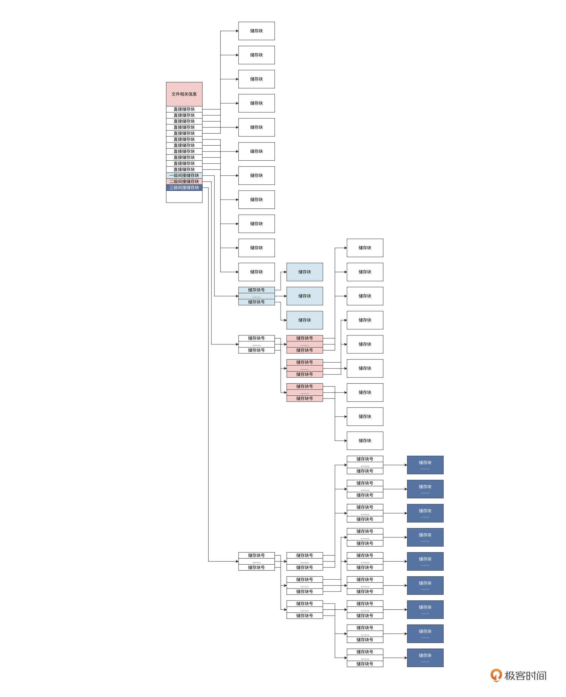
由上图可知，一个 inode 节点中有 11 个直接储存块，其中存放的是块号，能直接索引 11 个储存块。
如果每个储存块大小是 1KB 的话，可以保存 11KB 的文件数据；当文件内容大于 11KB 时，就要用到一级间接储存块。这时，一级间接储存块里的块号索引的储存块中不是文件数据，而是储存的指向储存块的块号，它可以储存 1024/4 个块号，即可索引 1024/4 个储存块。二级、三级间接块则依次类推，只不过级别更深，保存的块号就更多，能索引的储存块就更多，储存文件的数据量就更大。
多重指针
Ext3 文件系统的目录项
我们已经对 Ext3 文件系统若干结构都做了梳理，现在你应该对 Ext3 文件系统如何储存文件有了一定认识。
可是文件系统中还有许多文件目录，文件目录是怎么处理的呢？
Ext3 文件系统把目录当成了一种特殊的文件，即目录文件，目录文件有自己的 inode 节点，能读取其中数据。
在目录文件的数据中，保存的是一系列目录项，目录项用来存放文件或者目录的 inode 节点号、目录项的长度、文件名等信息。下面我们看一看，用 C 语言定义的单个目录项结构长什么样：
#define EXT3_NAME_LEN 255
struct ext3_dir_entry {
__le32 inode; // 对应的inode节点号
__le16 rec_len; // 目录项长度
__u8 name_len; // 文件名称长度
__u8 file_type; // 文件类型：文件、目录、符号链接
char name[EXT3_NAME_LEN];// 文件名
};
目录项结构大小不是固定不变的，这是由于每个文件或者目录的名称，不一定是 255 个字符，一般情况下是少于 255 个字符，这就导致 name 数组不必占用完整的空间。所以目录项是动态变化，需要结构中的
rec_len字段，才能知道目录项的真实大小。
总结

课后思考
请问 Ext3 文件系统的超级块放在硬盘分区的第几个扇区中。
In the Ext3 file system, the superblock contains several fields that store metadata about the file system, including the number of sectors per block group. The superblock itself is typically placed in sector 1 of the file system. The superblock is not divided into sectors; rather, it is a single block of data that contains information about the file system.
6｜Linux文件系统（二）：Linux如何存放文件？
通过上节课的学习，我们已经对 Ext3 文件系统的结构非常了解了。这种了解究竟正确与否，还是需要通过写代码来验证。
这节课我们读取 Ext3 文件系统中的文件，加深对 Ext3 的理解。